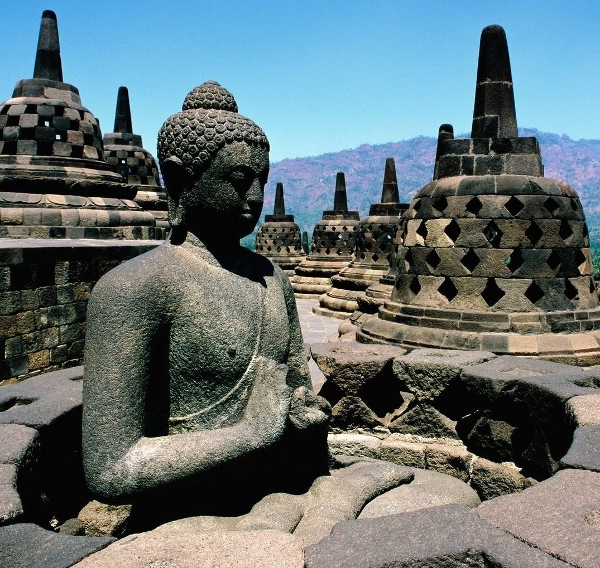
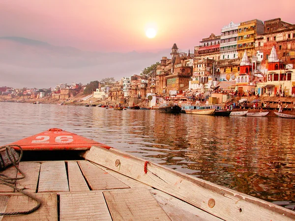

Індія
Офіційна назва Респуубліка Індія
Країна у Південній Азії. Індія є другою за чисельністю населення та сьомою за площею країною світу, а також найнаселенішою демократією світу.Сучасні люди прибули на індійський субконтинент з Африки не пізніше 55 000 років тому. Більшість із них тривалий час були мисливцями-збирачами, і жили в різних формах ізоляції, що зробило регіон генетично різноманітним, поступаючись лише Африці. Стале життя виникло на субконтиненті в західних краях басейну річки Інд 9000 років тому, поступово перетворюючись на Індську цивілізацію у третьому тисячолітті до н.е.
Цікаві факти про Індію
- Для індійців не існує традиційних для українців чотирьох сезонів року. В Індії їх шість – літо, сезон мусонів, осінь, зима, передвесняний сезон і весна.
- Індійці працюють шість днів на тиждень. Населення Індії доволі заощадливе, навіть якщо людина заможна. Єдина слабкість індійців – золото. За цей метал вони готові викласти чи не останні копійки.
- Боллівуд – ще одна гордість індійців. Щороку Індія випускає понад 1 тис. фільмів. У кінотеатрах цієї країни існує особлива традиція – перед показом фільму лунає гімн країни.
- Корова – не єдина священна тварина в Індії. В Індії також особливо ставляться до макак – символу мудрості й розуму. Вони доставляють чимало клопоту населенню, зокрема туристам.
- Сарі – візитна картка Індії. Це традиційний жіночий одяг у вигляді шматка тканини довжиною від 4 до 9 м., який обертають навколо тіла. Сарі щедро прикрашають вишивкою, золотими нитками, камінцями та бісером.

